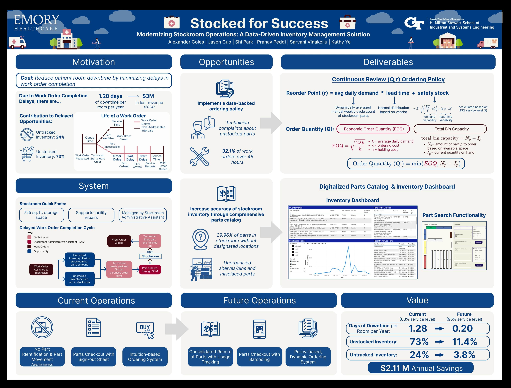

Emory University Hospital Midtown — Stocked for Success
Data-driven inventory management to reduce room downtime and improve parts availability.

Overview
We designed a continuous-review inventory policy and a digitized parts catalog/dashboard for the Facilities stockroom (serving 600+ beds across 28 specialties). Targeted untracked items and stockouts delaying work-order completion and room availability.
Highlights
- (Q,r) policy with safety stock for critical SKUs.
- Barcode-based checkout and searchable parts catalog.
- Dashboards for par levels, order queues, and usage trends.
Impact
- Projected multi-million dollar annual savings through reduced downtime.
- Higher stock accuracy and faster work-order cycle times.